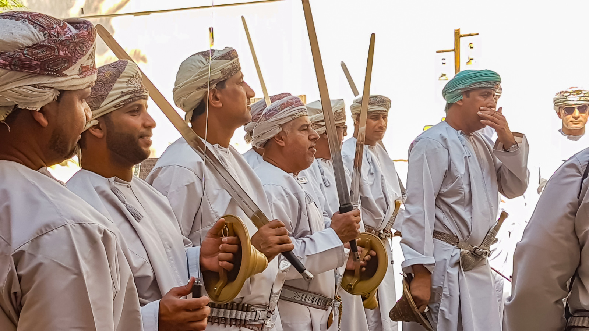
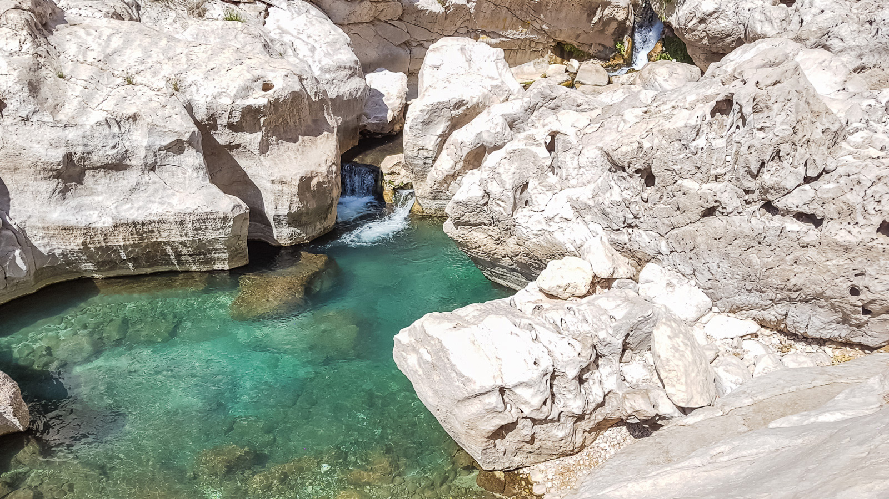

So, I’m not the biggest fan of top ten lists but I’m guessing Oman isn’t completely saturated with them yet or in fact, Oman travel videos by the looks of it. I’ll keep my stories of goat attacks, burst tyres, random party invites, accidentally breaking into airports and exploding gas canisters for next time…
If anyone is wondering why Oman is on the Lonely Planet Best in Travel list for 2017 I’m hoping this Oman Tavel Video will answer that question. If not, the ten reasons to visit Oman below should be enough to have you booking a ticket.
Every year Lonely Planet release their Best in Travel list of destinations, regions and experiences that are going to be the travel trends of the year ahead and Oman came at number eight on their top countries to visit.
I headed there to Snapchat this beautiful country for them last week and from the comments, I can tell you one thing – Oman is quickly going to the top of everyone’s list so get in now before the crowds descend.
The video of Oman above might not depict it, but the hospitality I experienced in Oman was unlike anywhere else.
From the Bedouin (nomadic) ladies that live in the desert stopping to offer us tea through to the full blown picnic we were invited to join on top of a mountain, I have never felt more welcome anywhere. How people can write all the Middle East off as a dangerous place to travel baffles me. Oman is safe. I slept in a tent every night and had zero concerns for my safety (other than hungry goats).
Whilst I have read some accounts of people travelling Oman with a 2WD and saying it was no problem, the roads we went down were certainly not doable without a 4WD and even then we managed to blow a tyre (easily replaceable in many shops).
Given the remoteness of some places, I opted to hire from a local company with offices on the ground in case of any emergencies for my Oman 4WD hire. Mark Tours as well as running their regular tours throughout the country have a range of vehicles and they can be picked up from Ruwi (Muscat) or the airport and can be booked online. Sadly, I don’t have a license but smashing through sand dunes looked like an awesome experience to be behind the wheel for.
I can’t think of many countries where for sunrise you can be on a beach watching huge turtles laying eggs and then by sunset be in the middle of a desert as wild camels stroll past. Donkeys, camels, snakes, leopards, turtles and my beloved goats that star in the Oman travel video litter the landscape of this country making it ideal for animal lovers.
The Wahiba Sands are a stunning backdrop and as my first desert experience surpassed all my ‘Arabian nights’ expectations. The Travel video of Oman above only shows a small snippet of how impressive they are and sadly, Drones are not legally allowed in the country so I couldn’t capture the sheer size of it. But trust me, it needs to get on any list you have!
The two wadis in the Oman video I shot are Wadi Bani Khalid and Wadi Shab. These beautiful canyons can be found both inland and coming in from the coast and provide a tropical paradise to cool down from the Oman heat.
Although these two might be the most famous near Muscat you will stumble on them in varying sizes through the country. Being able to take your Oman 4WD and drive through the dried up (and sometimes shallow) Wadis is an awesome experience.
Oman hugs both the Gulf of Oman, with Iran and Pakistan across the Hormuz Straight and the Arabian sea along the east coast. The rocky coastline, miles of sandy beaches and the crystal clear water make this also an ideal chill or scuba destination as well as one for adventure.
Although I didn’t get much time to explore the coast and as such is it missing from the Oman video I shot, I plan to head back and visit the Musandam peninsula early next year. Often referred to as the ‘Fjords of Oman’ due to its similarity to Norway make sure you give yourself time to visit as it is disconnected from the mainland by the UAE.
Jebel Shams, a mountain region a few hours drive from Muscat is home to the highest point in eastern Arabia. A huge Wadi runs along nearby and is often referred to as the Grand Canyon of Arabia due to the sheer drop and impressive limestone rock canyon. If I wasn’t such a wuss when it comes to heights I might have got a bit more of it in the travel video of Oman I made, but alas – since slipping off an icy mountain in Switzerland and a bunch of Japanese tourist found it better to laugh and take photos of me as I clung on than help I’ve become a bit anxious around heights…
Oman is a popular wild camping destination, not just for tourists but also for the locals – heading into the mountains on the weekend to enjoy the nature of their country.
Whether you are in the middle of the Wahiba sands or atop of the mountain region, the silence and lack of light are deafening. Literally, bar the odd goat (and their freaky ass eyes when a torch hits them) you could hear a pin drop as you marvel at the incredible milky way above.
Sure, if you come to Oman and go to the luxury resorts and head out on tours you will drop a lot of money. But I reckon I spent around $25 a day on average and for one of the best trips of my life, I thought the country was insanely good value.
Though, if you don’t mind sitting in goat poop now and then (yep, they aren’t pebbles) or a lack of showers you might want to follow my steps to exploring this country on the wild side. More to follow on budgets and itineraries soon!